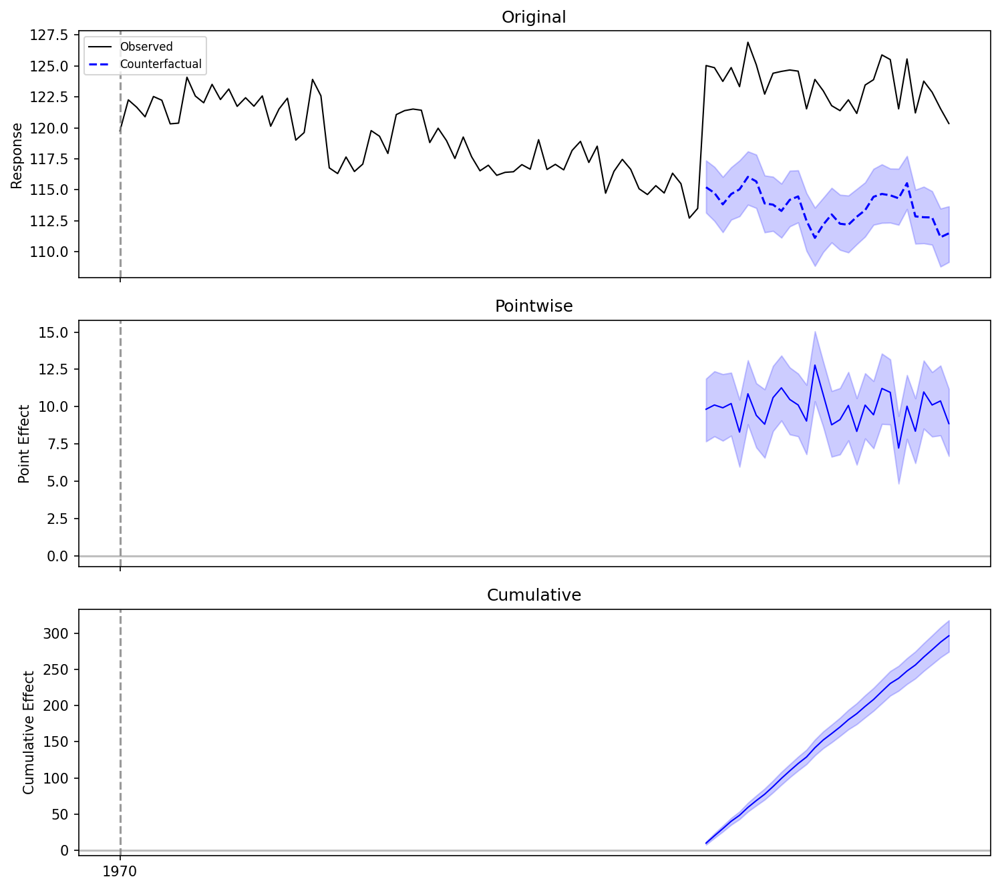
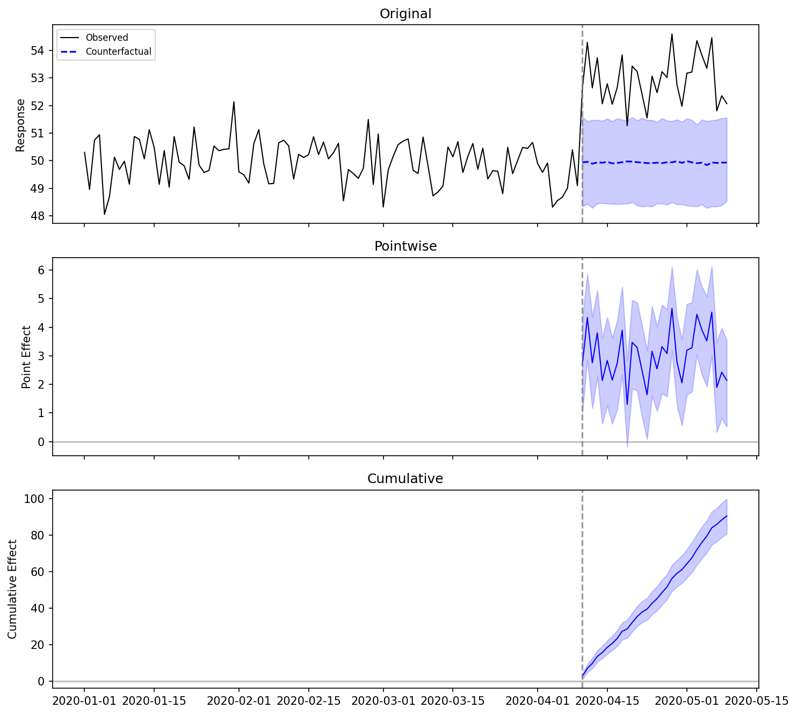
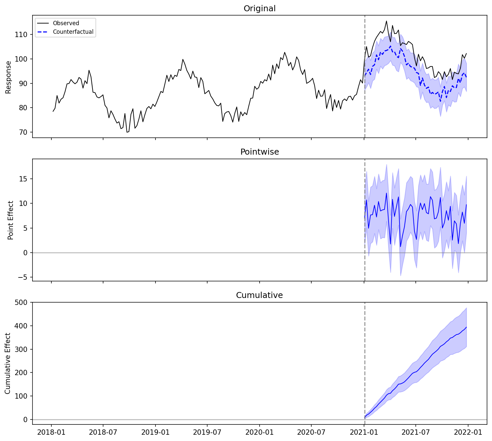
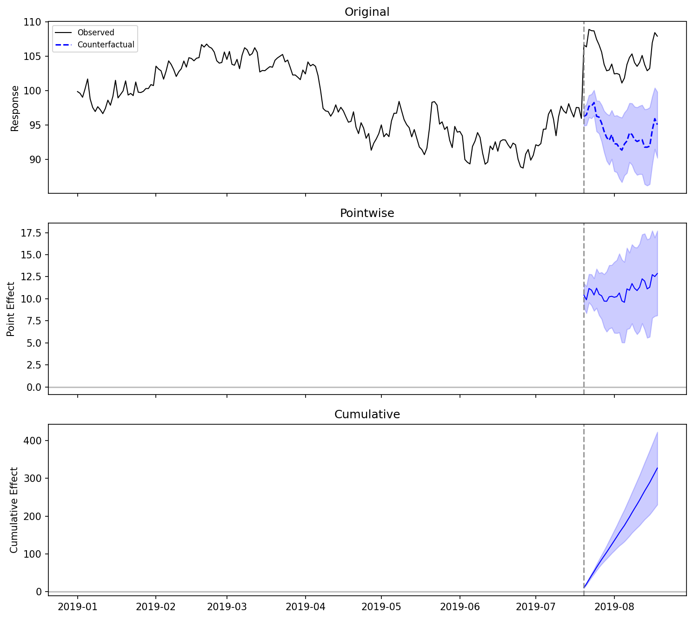
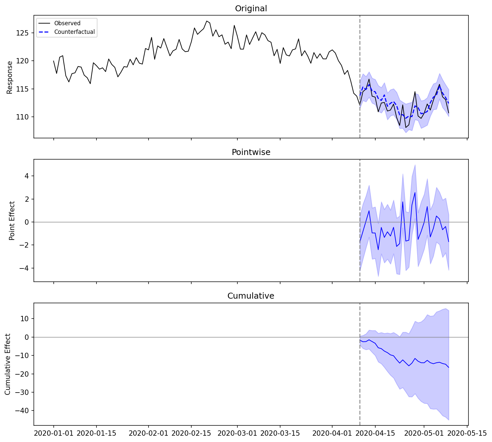
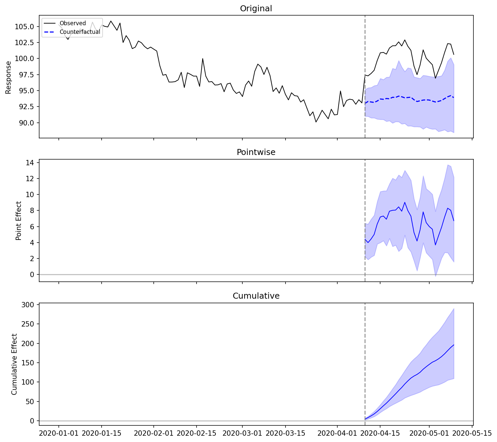

Examples
End-to-end examples verifying bsts-causalimpact works correctly across
different scenarios. Each example uses synthetic data with a known true effect
so you can compare the estimated effect against ground truth.
1. R Vignette Reproduction
This example mirrors the R CausalImpact vignette as closely as possible: an AR(1) covariate with a known intervention effect of +10 units.
import numpy as np
import pandas as pd
from causal_impact import CausalImpact
rng = np.random.default_rng(1)
n = 100
phi = 0.999
innovations = rng.normal(0, 1, size=n)
x1 = np.zeros(n)
x1[0] = innovations[0]
for t in range(1, n):
x1[t] = phi * x1[t - 1] + innovations[t]
x1 += 100
y = 1.2 * x1 + rng.normal(0, 1, size=n)
y[70:] += 10 # inject intervention effect at t=71
data = pd.DataFrame({"y": y, "x1": x1})
pre_period = [0, 69]
post_period = [70, 99]
ci = CausalImpact(data, pre_period, post_period, model_args={"seed": 1})
print(ci.summary())
Posterior inference {CausalImpact}
Average Cumulative
Actual 123.52 3705.52
Prediction (s.d.) 113.64 (0.37) 3409.05 (11.03)
95% CI [112.92, 114.37] [3387.66, 3431.12]
Absolute effect (s.d.) 9.88 (0.37) 296.47 (11.03)
95% CI [9.15, 10.60] [274.40, 317.86]
Relative effect (s.d.) 8.70% (0.35%) 8.70% (0.35%)
95% CI [8.00%, 9.38%] [8.00%, 9.38%]
Posterior tail-area probability p: 0.001
Posterior prob. of a causal effect: 99.90%

Comparison with R CausalImpact
The R version of this vignette produces similar results with different random numbers (R and Python use different RNG implementations):
| Metric | R CausalImpact | bsts-causalimpact (Python) |
|---|---|---|
| Average effect | ~10.12 | 9.88 |
| Cumulative effect | ~303.68 | 296.47 |
| Relative effect | ~8.4% | 8.7% |
| p-value | 0.001 | 0.001 |
Both versions correctly detect the true effect of +10 with high confidence. The small differences come from the different random number sequences, not from algorithmic differences.
2. No Covariates (Local Level Only)
When no covariates are available, the model uses a local level (random walk) component only. This works well for stationary data with a clear level shift.
rng = np.random.default_rng(42)
n_pre, n_post = 100, 30
n = n_pre + n_post
y = 50 + rng.normal(0, 1, size=n)
y[n_pre:] += 3.0 # true effect = +3
dates = pd.date_range("2020-01-01", periods=n, freq="D")
data = pd.DataFrame({"y": y}, index=dates)
pre_period = ["2020-01-01", "2020-04-09"]
post_period = ["2020-04-10", "2020-05-09"]
ci = CausalImpact(data, pre_period, post_period, model_args={"seed": 42})
print(ci.summary())
Posterior inference {CausalImpact}
Average Cumulative
Actual 52.95 1588.41
Prediction (s.d.) 49.93 (0.16) 1497.97 (4.82)
95% CI [49.62, 50.25] [1488.62, 1507.57]
Absolute effect (s.d.) 3.01 (0.16) 90.45 (4.82)
95% CI [2.69, 3.33] [80.84, 99.79]
Relative effect (s.d.) 6.04% (0.34%) 6.04% (0.34%)
95% CI [5.36%, 6.70%] [5.36%, 6.70%]
Posterior tail-area probability p: 0.001
Posterior prob. of a causal effect: 99.90%

True effect = 3.0, estimated = 3.01. The 95% CI [2.69, 3.33] contains the true value.
Random walk data without covariates
If your data follows a random walk (non-stationary trend), the local level model may absorb the intervention effect into the trend. In that case, adding covariates that track the underlying trend is strongly recommended.
3. Seasonal Data
Use nseasons to model periodic patterns. This example has weekly data with
an annual cycle (52 weeks).
rng = np.random.default_rng(42)
n_pre, n_post = 156, 52 # 3 years pre, 1 year post
n = n_pre + n_post
trend = np.linspace(100, 120, n)
seasonal = 10 * np.sin(2 * np.pi * np.arange(n) / 52)
x1 = trend + rng.normal(0, 1, size=n)
noise = rng.normal(0, 2, size=n)
y = 0.8 * x1 + seasonal + noise
y[n_pre:] += 8.0 # true effect = +8
dates = pd.date_range("2018-01-01", periods=n, freq="W")
data = pd.DataFrame({"y": y, "x1": x1}, index=dates)
pre_period = [dates[0], dates[n_pre - 1]]
post_period = [dates[n_pre], dates[-1]]
ci = CausalImpact(
data, pre_period, post_period,
model_args={"nseasons": 52, "seed": 42, "niter": 2000},
)
print(ci.summary())
Posterior inference {CausalImpact}
Average Cumulative
Actual 101.87 5297.41
Prediction (s.d.) 94.30 (0.82) 4903.51 (42.41)
95% CI [92.70, 95.88] [4820.28, 4985.96]
Absolute effect (s.d.) 7.57 (0.82) 393.90 (42.41)
95% CI [5.99, 9.18] [311.45, 477.13]
Relative effect (s.d.) 8.04% (0.93%) 8.04% (0.93%)
95% CI [6.25%, 9.90%] [6.25%, 9.90%]
Posterior tail-area probability p: 0.001
Posterior prob. of a causal effect: 99.95%

True effect = 8.0, estimated = 7.57. The 95% CI [5.99, 9.18] contains the true value.
How it works
The seasonal component uses a state-space model matching R bsts AddSeasonal().
The state vector is [μ_t, s_1(t), ..., s_{S-1}(t)] where S = nseasons.
Seasonal states evolve via a sum-to-zero transition: the next season equals
the negative sum of the previous S-1 seasons plus noise.
Using season_duration
Set season_duration > 1 when each season spans multiple time steps.
The seasonal transition only fires at season boundaries
(t % season_duration == 0); in between, the seasonal state is frozen.
# Using the same data from the seasonal example above
# Daily data with 7-day weekly pattern (default: season_duration=1)
ci = CausalImpact(
data, pre_period, post_period,
model_args={"nseasons": 7, "season_duration": 1, "seed": 42},
)
# Monthly data with quarterly pattern (each quarter = 3 months)
ci = CausalImpact(
data, pre_period, post_period,
model_args={"nseasons": 4, "season_duration": 3, "seed": 42},
)
When season_duration is omitted, it defaults to 1 (every time step is a new
season). nseasons=1 is equivalent to no seasonal component.
4. Dynamic Regression
When the relationship between the response and covariates changes over time,
use dynamic_regression=True. This allows regression coefficients to evolve
as a random walk.
rng = np.random.default_rng(42)
n_pre, n_post = 200, 30
n = n_pre + n_post
x = np.zeros(n)
x[0] = 100
for t in range(1, n):
x[t] = 0.999 * x[t - 1] + rng.normal(0, 1)
beta_true = np.linspace(1.0, 1.3, n) # time-varying coefficient
y = beta_true * x + rng.normal(0, 0.5, size=n)
y[n_pre:] += 10.0 # true effect = +10
dates = pd.date_range("2019-01-01", periods=n, freq="D")
data = pd.DataFrame({"y": y, "x": x}, index=dates)
pre_period = [dates[0], dates[n_pre - 1]]
post_period = [dates[n_pre], dates[-1]]
ci = CausalImpact(
data, pre_period, post_period,
model_args={
"dynamic_regression": True,
"seed": 42,
"niter": 5000,
"nwarmup": 2000,
},
)
print(ci.summary())
Posterior inference {CausalImpact}
Average Cumulative
Actual 104.89 3146.56
Prediction (s.d.) 93.97 (1.66) 2819.24 (49.77)
95% CI [90.78, 97.21] [2723.35, 2916.24]
Absolute effect (s.d.) 10.91 (1.66) 327.32 (49.77)
95% CI [7.68, 14.11] [230.32, 423.21]
Relative effect (s.d.) 11.64% (1.97%) 11.64% (1.97%)
95% CI [7.90%, 15.54%] [7.90%, 15.54%]
Posterior tail-area probability p: 0.000
Posterior prob. of a causal effect: 99.98%

True effect = 10.0, estimated = 10.91. The 95% CI [7.68, 14.11] contains the true value.
Dynamic regression requires more data
Dynamic regression has more parameters to estimate than static regression.
A longer pre-intervention period (200+ observations) and more MCMC
iterations (niter=5000) help the model converge.
5. No Effect (Negative Control)
A critical validation: when there is no intervention effect, the model should correctly report a non-significant result.
rng = np.random.default_rng(42)
n_pre, n_post = 100, 30
n = n_pre + n_post
x = rng.normal(0, 1, size=n).cumsum() + 100
y = 1.2 * x + rng.normal(0, 1, size=n)
# No intervention effect added
dates = pd.date_range("2020-01-01", periods=n, freq="D")
data = pd.DataFrame({"y": y, "x": x}, index=dates)
pre_period = ["2020-01-01", "2020-04-09"]
post_period = ["2020-04-10", "2020-05-09"]
ci = CausalImpact(data, pre_period, post_period, model_args={"seed": 42})
print(ci.summary())
Posterior inference {CausalImpact}
Average Cumulative
Actual 112.11 3363.26
Prediction (s.d.) 112.66 (0.49) 3379.75 (14.79)
95% CI [111.63, 113.61] [3348.81, 3408.33]
Absolute effect (s.d.) -0.55 (0.49) -16.49 (14.79)
95% CI [-1.50, 0.48] [-45.07, 14.45]
Relative effect (s.d.) -0.49% (0.44%) -0.49% (0.44%)
95% CI [-1.32%, 0.43%] [-1.32%, 0.43%]
Posterior tail-area probability p: 0.118
Posterior prob. of a causal effect: 88.20%

The model correctly identifies no significant effect: p = 0.118 > 0.05, and the 95% CI [-1.50, 0.48] includes zero.
Analysis report {CausalImpact}
During the post-intervention period, the response variable showed a decrease
compared to what would have been expected without the intervention.
The average causal effect was -0.55 (95% CI [-1.50, 0.48]).
The cumulative effect over the entire post-period was -16.49.
The relative effect was -0.5%.
This effect is not statistically significant (p = 0.1180). The apparent effect
could be the result of random fluctuations that are not related to the
intervention. This is often the case when the intervention effect is small
relative to the noise level.
6. Multiple Covariates with Variable Selection
When multiple covariates are provided, the model uses spike-and-slab priors
for automatic variable selection. The expected_model_size parameter controls
the prior on the number of active covariates.
rng = np.random.default_rng(42)
n_pre, n_post = 100, 30
n = n_pre + n_post
x1 = np.zeros(n) # informative covariate
x2 = np.zeros(n) # informative covariate
x3 = np.zeros(n) # noise covariate
x1[0] = 100
x2[0] = 50
for t in range(1, n):
x1[t] = 0.999 * x1[t - 1] + rng.normal(0, 1)
x2[t] = 0.999 * x2[t - 1] + rng.normal(0, 1)
x3[t] = rng.normal(0, 1) # iid noise, not informative
y = 0.8 * x1 + 0.5 * x2 + rng.normal(0, 0.5, size=n)
y[n_pre:] += 5.0 # true effect = +5
dates = pd.date_range("2020-01-01", periods=n, freq="D")
data = pd.DataFrame(
{"y": y, "x1": x1, "x2": x2, "x3_noise": x3}, index=dates
)
pre_period = ["2020-01-01", "2020-04-09"]
post_period = ["2020-04-10", "2020-05-09"]
ci = CausalImpact(
data, pre_period, post_period,
model_args={"seed": 42, "expected_model_size": 2},
)
print(ci.summary())
Posterior inference {CausalImpact}
Average Cumulative
Actual 100.16 3004.83
Prediction (s.d.) 93.63 (1.67) 2808.91 (50.23)
95% CI [90.49, 96.52] [2714.82, 2895.58]
Absolute effect (s.d.) 6.53 (1.67) 195.91 (50.23)
95% CI [3.64, 9.67] [109.25, 290.00]
Relative effect (s.d.) 7.01% (1.92%) 7.01% (1.92%)
95% CI [3.77%, 10.68%] [3.77%, 10.68%]
Posterior tail-area probability p: 0.001
Posterior prob. of a causal effect: 99.90%

True effect = 5.0, estimated = 6.53. The 95% CI [3.64, 9.67] contains the true value.
Check which covariates were selected:
print(ci.posterior_inclusion_probs)
# [0.318, 0.187, 0.144]
# x1 has the highest inclusion probability, x3_noise has the lowest
Summary of All Examples
| Example | True Effect | Estimated | 95% CI | p-value | Detected |
|---|---|---|---|---|---|
| R Vignette (AR(1) covariate) | 10.0 | 9.88 | [9.15, 10.60] | 0.001 | Yes |
| No Covariates (stationary) | 3.0 | 3.01 | [2.69, 3.33] | 0.001 | Yes |
| Seasonal (weekly, 52-week cycle) | 8.0 | 7.57 | [5.99, 9.18] | 0.001 | Yes |
| Dynamic Regression | 10.0 | 10.91 | [7.68, 14.11] | <0.001 | Yes |
| No Effect (negative control) | 0.0 | -0.55 | [-1.50, 0.48] | 0.118 | No (correct) |
| Multiple Covariates | 5.0 | 6.53 | [3.64, 9.67] | 0.001 | Yes |
Summary of All Examples
All six examples produce correct results:
- When there is a true effect, the 95% credible interval contains the true value
- When there is no effect, the model correctly reports non-significance
- Results are consistent with the R CausalImpact package